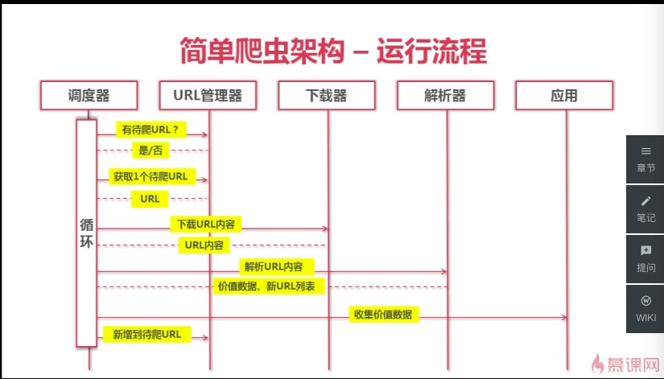
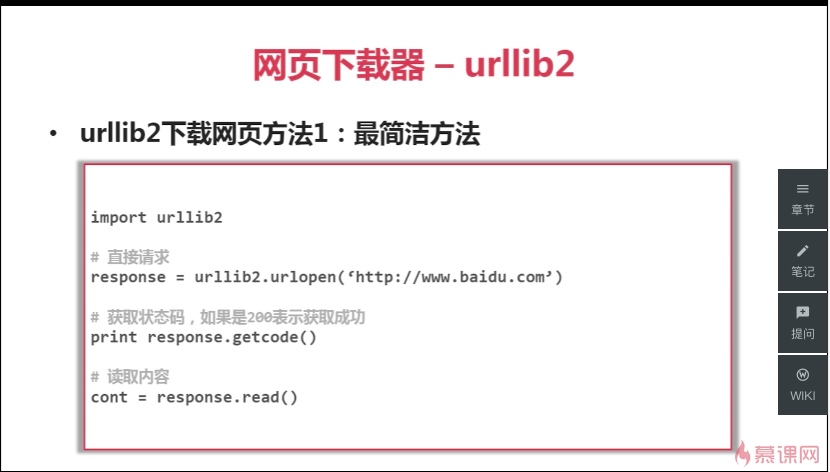
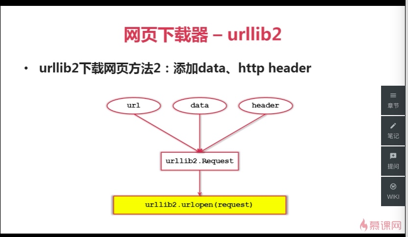
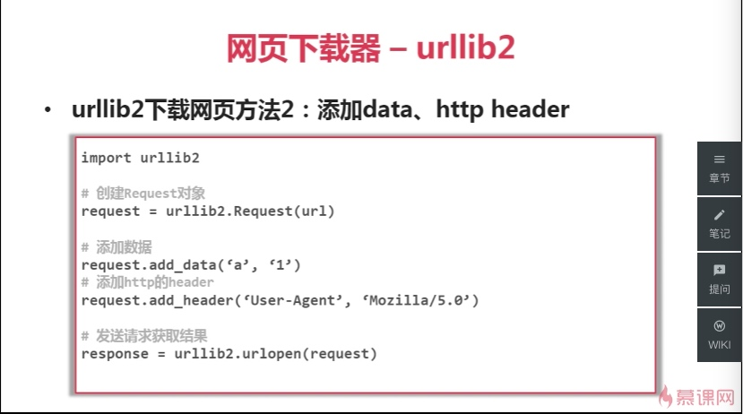
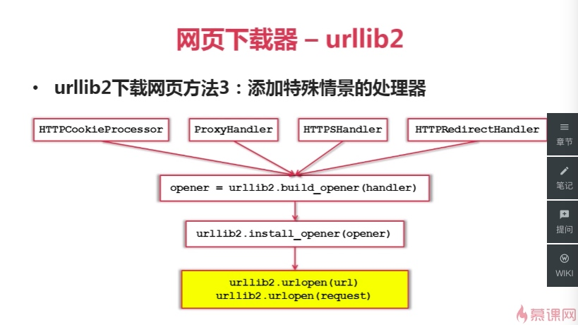
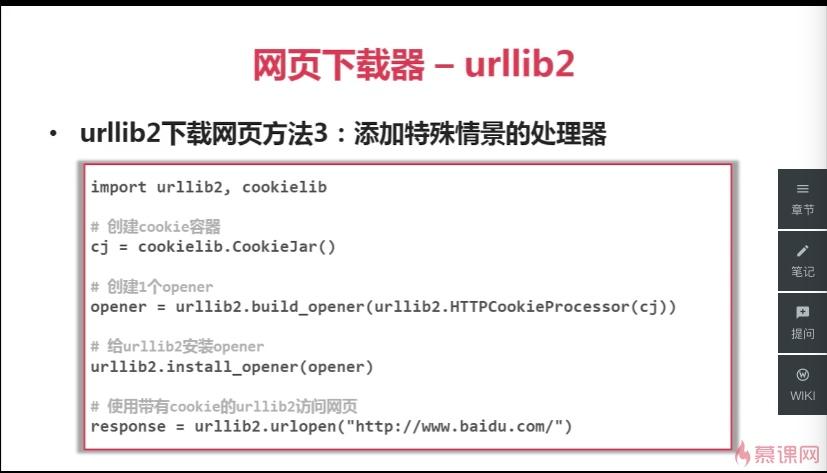
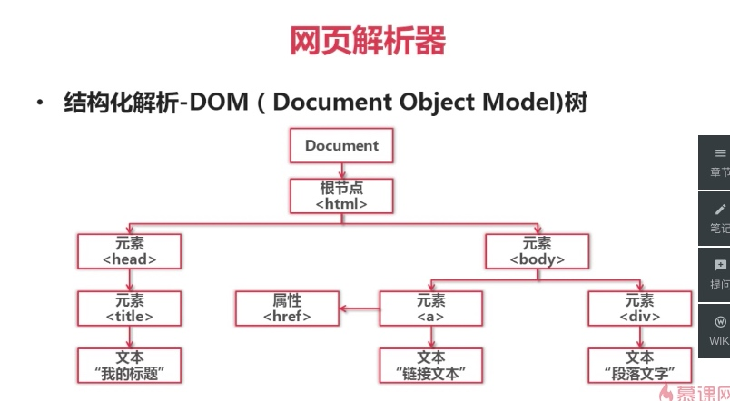

Python 爬虫教程
爬虫简介
简介：一段自动抓取互联网信息的程序
爬虫的价值：互联网数据，为我所用
爬虫调试端
- URL管理器
- 网页解析器
- 网页下载器
运行流程：调度器、URL 管理器、下载器、解析器、应用

URL 管理器
管理待抓取 URL 集合和已抓取 UTL 集合
* 防止重复抓取、防止循环抓取
需要具备的功能：
* 添加新 URL 到待爬取集合中
* 判断待添加 URL 是否在容器中
* 获取待爬取 URL -> 判断是否还有待爬取 URL
实现方式：
* 内存：待爬取 URL 集合：set() 已爬取 URL 集合：set()
* 关系数据库 MySQL urls(url, is_crawled)
* 缓存数据库 redis 待爬取 URL 集合：set 已爬取 URL 集合：set
网页下载器
Python官方库：urllib2
有三种网页下载方法





requests：第三方库
网页解析器
从网页中提取有价值数据的工具
Python 有以下几种网页解析器：
* 正则表达式
* html.parser
* Beautiful Soup
* lxml
本节使用 Beautiful Soup 来解析网页
BeautifulSoup的语法：Html -> 创建 BeautifulSoup 对象